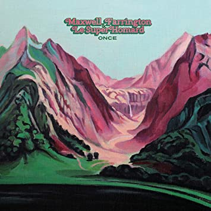

The Fargo Chronicle
Twenty-second Edition
December 2021
Free
Ella has new horizons

The year got off to a great start with Ella having her wisdom teeth removed.
On the day before her twenty-first birthday party, the wound became infected, so that was terrible timing.
Ella has started a new job with Australian Girls Choir as Venue and Events Assistant. This role assists the Queensland Venue and Events Coordinator with logistics of running the various choir campuses and events across Brisbane.
She continues to work as the Venue Manager for the Holland Park venue and also works a VM for the Indooroopilly campus.
Ella has been invited back to Lockhardt River to work with mainly indigenous community again this year with an expanded role and as part of a smaller team. The challenge is very exciting and Ella looks forward to renewing acquaintences from last year.
It's a milestone for sure but Ella has moved to a share house in the nearby suburb of Red Hill. The new house is shared with friends from university with common interests.
The cats, though, for now are staying with us.
Zoom zoom

We managed to zoom up to Cairns in April to help Paul niece Darian celebrate her 21st.
The Cairns trip was adjunct to a Magnetic Island holiday which we shared with Michael and Deborah.
As a part of what became known as the 'Indooroopilly Cluster', Ella was a close contact of a young girl from choir who tested positive to COVID. The three of us were thus forced to isolate at home, with Ella further isolating from us in her bedroom.
Fortunately Julie was already set up to work from home but on a personal level it meant Zoom meetings to keep in contact with family and friends.
Once restrictions were eased we were also able to return to Cairns and joined other family and friends for Helen's (Paul's sister) 60th birthday party.
Julie taking leave

This year Julie has been teaching year two. The kids work from home so why not the teachers?. Working from home was enforced for varying periods throughout the year, which seemed to settle into one day per week for terms three and four.
The JEGS - Julie, Ella, Georgina and Suz - had flights to Sydney and tickets to see the musical Hamilton. Well thanks COVID: that was canceled. Instead they went to Maleny for a few days.

It's become an annual event now to catch up with school mates and this year was at Maleny. Julie was quite familiar with some of the walking tracks.
Speaking of walking tracks, every opportunity is taken to hit the trails at nearby Mt Coot-tha. And Julie also regularly attends the gym and uses her eBike, though there has been less opportunity to commute for work this year on the days that she goes into the school with the need to carry equipment to have on hand at home.
Next year Julie will be in long service leave for the first half of the year and intends to retire in July.
Quiet time

With Luna living nearby she and her Pépé spend plenty of quality time together.
Music festivals have again been non-starters so the band has been fairly inactive again this year, though we still regulalry rehearse. There is hope for a few of the larger festivals in 2022 and we are on the list once again for Gympie Music Muster and the Winton Way Out West Fest.
In the meantime, Paul has joined a Men's Shed which has an active ukulele band. Paul's brother Michael has also joined.
In May, Paul and friends Michael and Chris managed to sneak in a trip to Adelaide before borders were closed to spend a week exploring bike rides our the city and hills.

In a regular week Paul will wake early and head out on his bike for a training ride and is racing most weekends.
Meanwhile in France

Max and Béa have purchased on a new home in Saint-Brieuc. As is normal in much of Europe, a bit of work to kitchen and bathroom was required before they could move in. They are now in.
Ida spent a scary night in hospital with respiratory trouble from which she has fully recovered. She celebrated her third birthday in December.
It has been a busy year for Max with the launch of 'Once' and album with Le SuperHomard. I cannot recommend it more highly. Do yourself a favour.
The pair performed an hour long televised concert for French 'arte TV' for their 'Route du Rock' series.
Max's band 'Dewaere' is in the process of mixing their second album, due for release in 2022. Hopefully they will be able to promote its release over the summer festival season to their appreciative european fans.
Generating smiles

Kate continues teaching Japanese two days per week at West End State School and has had her contract extended into 2022. Luna enjoys the challenges at day care and enjoys spending time there with her friends.
In November, Luna was the flower girl for the wedding of her Uncle Jeramiah and Aunt Kate (Ben's brother and sister-in-law). A big responsibility which she took in her stride.
Luna visits us often as she lives quite close, so it's a joy to spend time with her.
Miss independent

Mun is still living independently in her unit in Currumbin.
Julie is able to visit with her often to attend to various medical appointments which are becoming a little more frequent.
Sand under foot

Jason and Julie borrowed a campervan and with dog Molly, headed out to Birdsville for the Big Red Bash for a three day music festival.
Jason is in the process of selling his studio apartment in Palm Beach. He and partner Julie have bought a unit in a new beachside complex under constructiion also in Palm Beach.
Tabitha news

What about Tabi
Celebrations

While on Magnetic Island this year we celebrated our 22nd wedding anniversary.
Once again we'll be spending Christmas Day with Mun at Currumbin.
That will be followed up with Festivus for the rest of us (the Farringtons) in Broabeach which will lead nicely into the New Year.
Does that sound like too much fun for 2021?